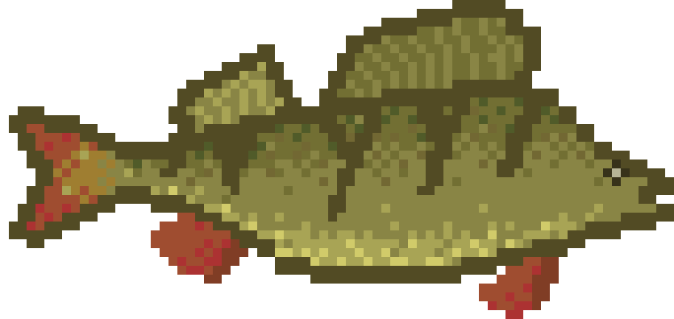

Ešerys (Perca fluviatilis) – ešerinių (Percidae) šeimos žuvis. Kūnas iki 50 cm ilgio, aukštas, kuprotas, apaugęs kietais žvynais.
Nugara tamsiai žalsva. Šonai žalsvai gelsvi su 5-9 tamsiomis skersinėmis juostomis. Pilvas baltas.

Lietuvoje gana dažna žuvis, paplitusi gėluose vandenyse. Paprastai sugaunama 15-18 cm, 70-500 g, 4-9 metų.
Jiems patinka sliekai, batonas, taip pat didesni kimba ir ant gyvo masalo.